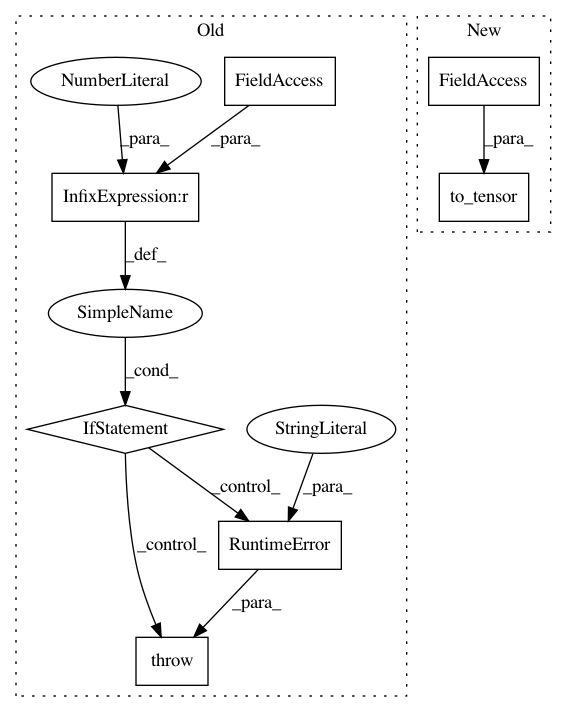

1c758ba9d6c14d9b9d3599e44c3508e2692d8d35,pyprob/distributions/empirical.py,Empirical,effective_sample_size,#Empirical#,178
Before Change
@property
def effective_sample_size(self):
if self.length == 0:
raise RuntimeError("Empirical distribution instance is empty.")
if self._effective_sample_size is None:
self._effective_sample_size = 1. / self.weights.pow(2).sum()
return self._effective_sample_size
After Change
def effective_sample_size(self):
self._check_finalized()
if self._effective_sample_size is None:
weights = util.to_tensor(self._log_weights).exp()
self._effective_sample_size = 1. / weights.pow(2).sum()
return self._effective_sample_size
In pattern: SUPERPATTERN
Frequency: 3
Non-data size: 7
Instances
Project Name: pyprob/pyprob
Commit Name: 1c758ba9d6c14d9b9d3599e44c3508e2692d8d35
Time: 2018-09-28
Author: atilimgunes.baydin@gmail.com
File Name: pyprob/distributions/empirical.py
Class Name: Empirical
Method Name: effective_sample_size
Project Name: pyprob/pyprob
Commit Name: 1c758ba9d6c14d9b9d3599e44c3508e2692d8d35
Time: 2018-09-28
Author: atilimgunes.baydin@gmail.com
File Name: pyprob/distributions/empirical.py
Class Name: Empirical
Method Name: mode
Project Name: pyprob/pyprob
Commit Name: 1c758ba9d6c14d9b9d3599e44c3508e2692d8d35
Time: 2018-09-28
Author: atilimgunes.baydin@gmail.com
File Name: pyprob/distributions/empirical.py
Class Name: Empirical
Method Name: expectation